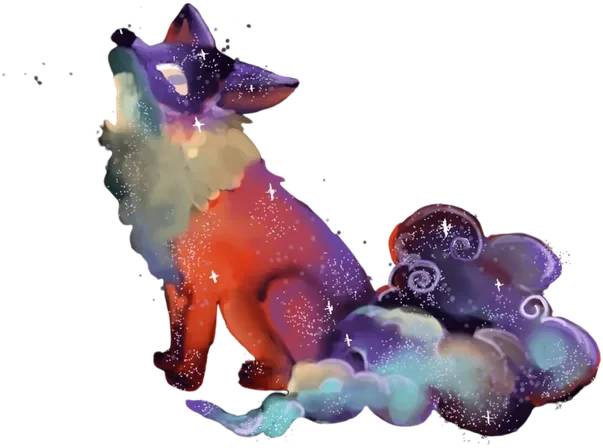
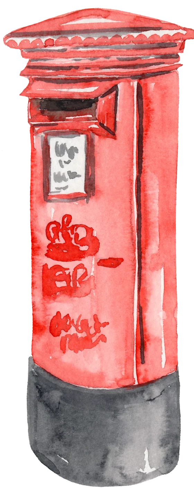
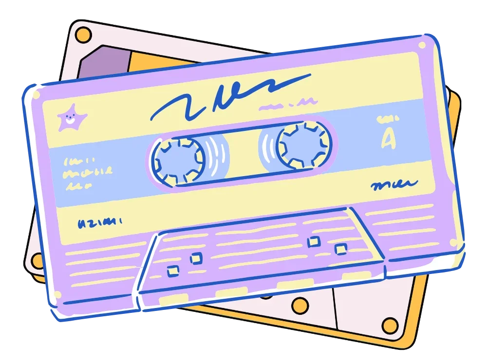
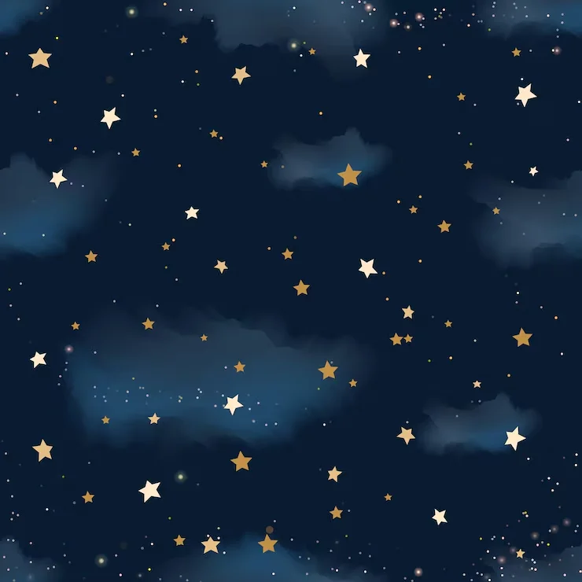
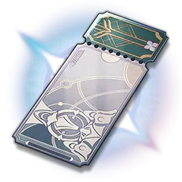
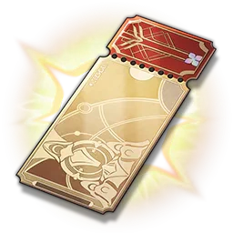
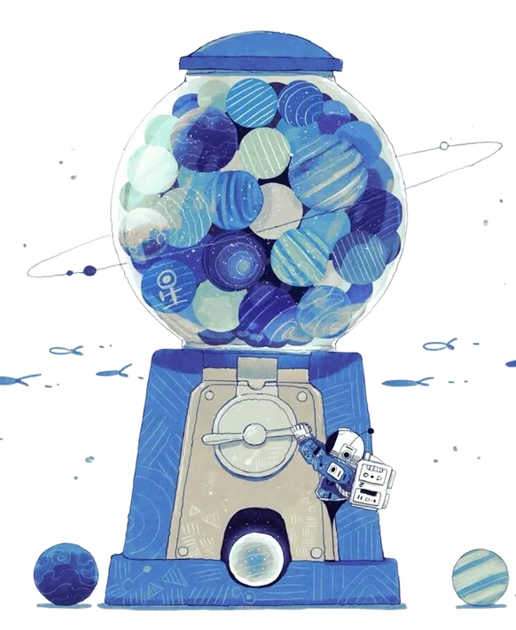
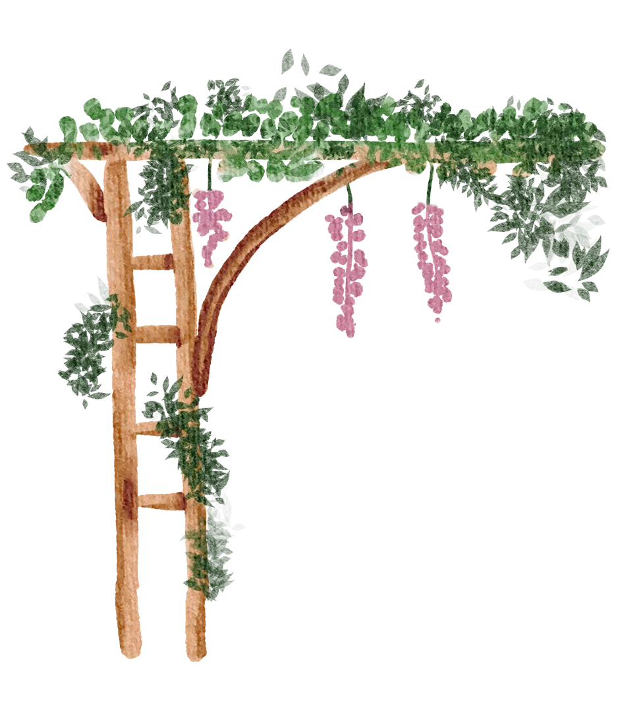
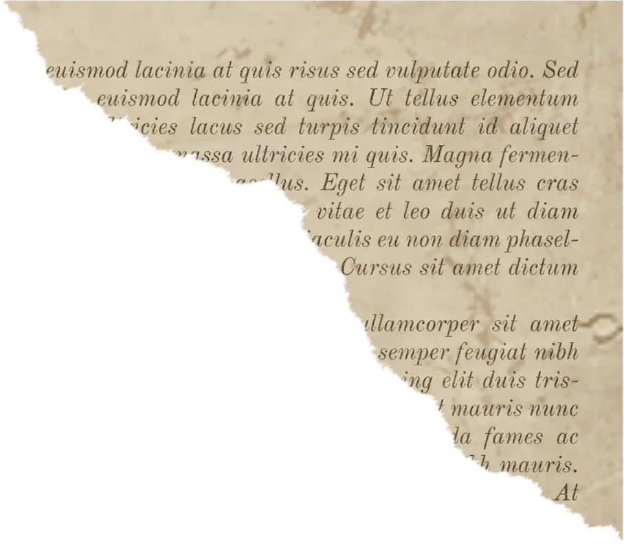
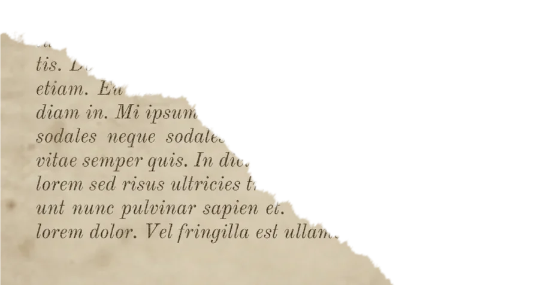

Welcome to
Our Cozy Corner


Postbox of doom
All the words I can write for you
A collection of all the letters I have written to you before, along with all the new ones to come.
Open the postbox →


Music I find cool!
Songs that remind me of you
I like creating playlists for you! These are some of the songs that remind me of you.
Drinks on me →



I made a gacha machine just for you
Pull for your favorite banners and you’ll get rewards that range from little notes and voice notes to me just gushing over how amazing you are.
Let’s go gambling →
A garden built only for you
I’d love to be playing Petit Planet with you already. Alas, we do have to wait a little longer. So, I made a little garden for you to grow things in while we wait.
Waiting for December →

AO3 is down! But not for you
It sucks when AO3 goes down during non-stop nut November. It is very devastating, I know! So, while I couldn’t bring the entire website back for you, I did try to recreate a small version of it with a few fanfics I managed to find. Are the fics any good? Honestly, I don’t really know, but I hope they can be of some help during these tiring times.
To the fics! →